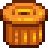

Lingote de cobre
| Lingote de cobre | |||||||||||
| Una barra de cobre puro. | |||||||||||
| Información | |||||||||||
| Origen | Horno |
||||||||||
|
|||||||||||
| Fabricación | |||||||||||
| Máquina | |||||||||||
| Tiempo de artesanía | |||||||||||
| Ingredientes | |||||||||||
El Lingote de cobre se consigue fundiendo 5 menas de cobre en un Horno usando como combustible una unidad de Carbón. Fundir el cobre lleva unos 30 minutos de juego. Los lingotes de cobre se usan en una gran variedad de recetas y para mejorar las Herramientas. Se puede vender por  60o.
60o.
Mejora de herramientas
Se requieren lingotes de cobre para la primera mejora de las herramientas.
| Imagen | Nombre | Coste | Materiales |
|---|---|---|---|
| Azada de cobre | |||
| Pico de cobre | |||
| Hacha de cobre | |||
| Regadera de cobre | |||
|  | Cubo de basura de cobre |
Fabricación
Los lingotes de cobre se pueden utilizar para fabricar los siguientes objetos:
| Imagen | Nombre | Descripción | Ingredientes | Se consigue |
|---|---|---|---|---|
| Prensa de queso | Convierte la leche en queso. |
|
||
| Trampa para cangrejos con la Profesión Trampero | Colócala en el agua, ponle cebo y revísala al día siguiente para ver si has atrapado algo. Funciona en arroyos, lagos y en el mar. |
|
||
| Barril | Coloca aquí una fruta o una verdura. Al cabo del tiempo se convertirá en una bebida. |
|
||
| Mayonesera | Convierte los huevos en mayonesa. |
|
||
| Aspersor | Riegas las 4 casillas adyacentes cada mañana. |
|
||
| Horno de carbón | Convierte 10 trozos de madera en uno de carbón. |
|
||
| Anillo resistente | Reduce la duración de los estados alterados a la mitad. |
|
||
| Resinera | ¡Colócala en un roble, arce o pino y espera a que el recipiente se llene! |
|
||
| Transmutar (Fe) | Una barra de hierro puro. |
|
||
| Corcho trampa | Hace que los peces escapen más despacio cuando no recoges el sedal. |
|
||
| Cofre Grande | Puede almacenar el doble de objetos que un cofre estándar. | Carpintería por |
Edificios
| Imagen | Nombre | Descripción | Coste | Tamaño |
|---|---|---|---|---|
| Silo | Te permite segar y acumular hierba para alimentar a tus animales. | 3x3 |
Regalos
| Reacciones de Aldeanos
| |
|---|---|
| Le gusta | |
| No le gusta | |
| Odia | |
Lotes
El Lingote de cobre se requiere en el  Lote Herrero en la Sala de Calderas.
Lote Herrero en la Sala de Calderas.
| Recursos | |
|---|---|
| Básico | Arcilla • Carbón • Fibra vegetal • Madera noble • Piedra • Madera • Musgo • Pila |
| Menas | Mena de cobre • Mena de hierro • Mena de oro • Mena de iridio • Mineral radiactivo |
| Lingotes | Lingote de cobre • Lingote de hierro • Lingote de oro • Lingote de iridio • Cuarzo refinado • Lingote radiactivo |